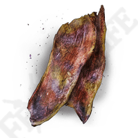

Elden Ring - Dappled White Cured Meat
Description
A white sliced meat, dried after pickling in a dappled medicinal solution. Boosts effects, and lasts longer than most traditional cured meat, but with reduced effectiveness. Can make the meat by following the recipe below. Or for the lazy, you may be able to find them in the sewer area of the Subterranean Shunning-Grounds. As well as Wyndham Ruins.

Ingredients
- 5 Golden Rowa
- 1 Strip of White Flesh
- 1 Budding Horn
- 1 Nascent Butterfly
Steps
- Obtain the objects from the ingredients list. Set the strip of white flesh to the side, and gather the rest of the items. First finely chop the budding horn and throw into a medium size container.
- Blend both the butterfly and 5x golden rowa together until smooth. Pour over the budding horn and shake well with the lid on the container.
- Place the white flesh into the container, and put it into the fridge for 24 hours or more. Once the meat has lost about 40% of it's original weight, it is time to enjoy.
Effects
- Temporarily boosts effects for 120 seconds
- +75 to the following stats:
- Immunity
- Robustness
- Focus